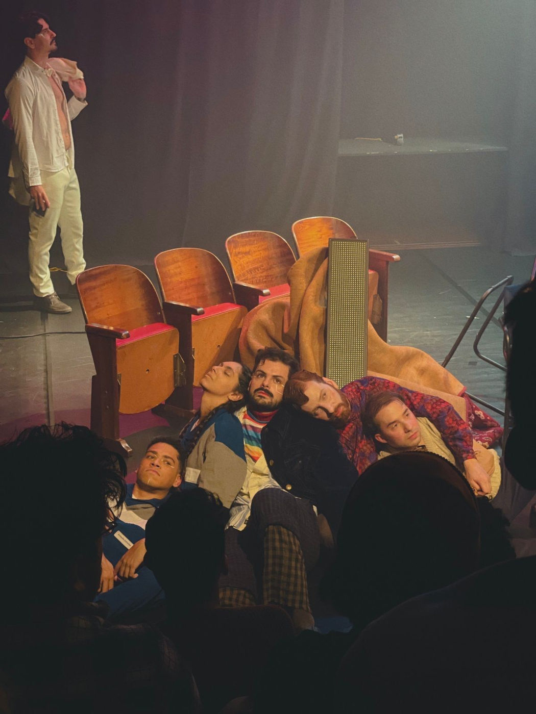

Foto — Divulgação
Teatro
Peça "Cidades Invisíveis" Transforma a imaginação de Calvino em realidade no palco
A peça "Cidades Invisíveis", livremente inspirada no romance de Ítalo Calvino, ganha vida sob a direção de Leonardo Bertholini, um renomado ator, diretor e dire…